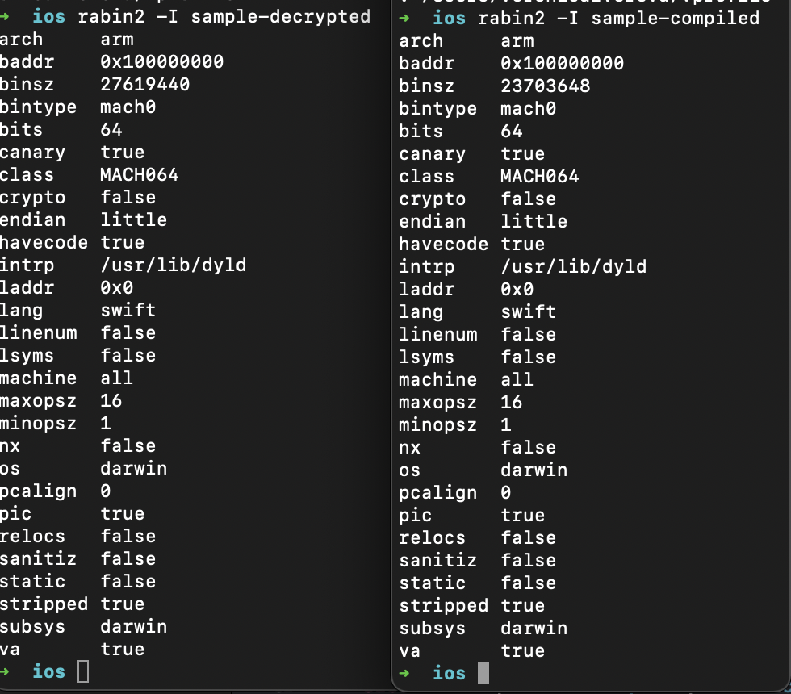
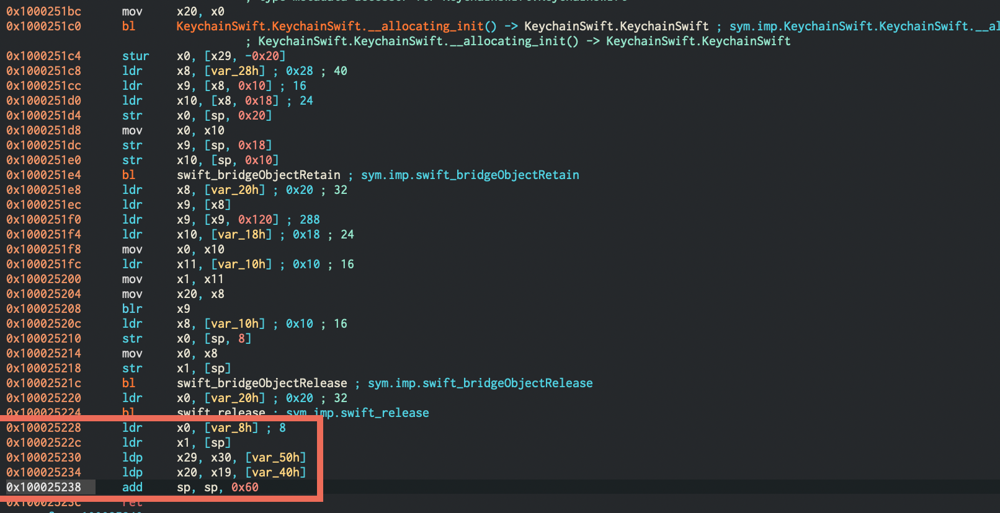

📆 24/04/2021 , Saturday
🕰 10:21 AM.
It’s an ordinary gloomy Mordor morning. To be honest, I was hoping for a sunny one… But may be one has to live somewhere else to claim that 🤷♀️. It’s been a while since I’ve done some decent reversing and I started missing it a bit. My first whitebox project and another one with mobile vulnerability assessment have both inspired me in their own ways to writing another blog post about reverse engineering.
Android vs iOS Everlasting Battle ⚔️
Anyone, performing mobile vulnerability assessment knows pretty well, that Android is like a Christmas 🎄 tree in the scary and mysterious fog 🌫 of reverse engineering, just standing there and sparkling with its lights and luring travellers passing by for some occasional reversing 😉. The code, it’s all there, in its pristine beauty saying “Come one! Look at these almost totally human-readable code! I am not like iOS, I am friednly”. That’s why writing my first super primitive frida code for Android was rediculously easy (substituting package name with a made up one and tampering with the method name as well for discretion sake 😎):
function bypassPIN() {
Java.perform(function() {
try{
Java.choose("com.example.MyLoginController", {
onMatch: function(instance) {
console.log("[ * ] Instance com.example.MyLoginController found in memory: " + instance);
console.log("[ * ] Method found in memory: " + instance.ifCorrect);
instance.ifCorrect();
},
onComplete: function() {
console.log("[ * ] Successfully bypassed PIN code");
}
});
}
catch(e) {
console.log("[ x ] Woops, something went wrong:");
console.log(e.message);
}
});
}
As for fingerprint check, this application used FingerprintManager, which is deprecated and there already exists a frida script to bypass it.
Reversing iOS (especilly those iOS applications written in Swift) is a tricky business. It’s not a piece of cake, it a real bear 🐻! For starters, unlike Android .java both Obj-C and Swift for iOS are compiled to hardcore ARM assembly code which is not as welcoming as java code 🤷 (even Java Bytecode). Secondly, Swift functions are very often mangled 🧶. I’ve already seen this technique when analysing C++ compiled binaries. A swift mangled name looks something like this: _TtCFCC5MyApp7MyClass10MySubClass6myFuncFS0_FT_T_L_11MySubSubClass. To demangle this trash one would have to use a tool or learn this “code”. For example, on Mac OSX you could run swift demangle _TtCFCC5MyApp7MyClass10MySubClass6myFuncFS0_FT_T_L_11MySubSubClass or xcrun swift-demangle _TtCFCC5MyApp7MyClass10MySubClass6myFuncFS0_FT_T_L_11MySubSubClass to see that it means the following: MySubSubClass #1 in MyApp.MyClass.MySubClass.myFunc(MyApp.MyClass) -> () -> (). It resembles serialisation in a way…. . Well, this demangling is sometimes automatically performed by radare2, Hopper or some other disassemblers (not in my case). May be I have not found this option yet.
I’ve asked myself, what a weird way to protect code. It’s making things harder, but not too much harder since it’s pretty easy to demangle these things back. There must be another reason to do that. As it turned out, this is done to prevent collisions when different objects are named the same []:
Name mangling is the encoding of function and variable names into unique names so that linkers can separate common names in the language. Type names may also be mangled. Name mangling is commonly used to facilitate the overloading feature and visibility within different scopes.
Another trick that makes analysis just slightly more difficult is that iOS applications downloaded from AppStore are always encrypted, this is the policy enforced by Apple. Therefore, you need an actual device and a specified tool to decrypt it. Not that it’s too hard, but it’s a slight complication sometimes. I think, this might make patching in runtime a little harder … .
Now to frida. Since there is nothing human-readable in iOS compiled code (unless you are a serious man reading ARM code as if it were a bedtime story for a kid), a frida script would look something like this if I were to change the return value of some function that returns bool [2]:
addr = ptr(0x100ac);
moduleBase = Module.getBaseAddress(targetModule);
targetAddress = moduleBase.add(addr);
Interceptor.attach(targetAddress, {
onEnter: function(args) {
if(this.context.x0 == 0x01){
this.context.x0=0x00
console.log("Bypass checkExistenceOfSuspiciousFiles");
}
},
});
So, in order to patch a function in runtime 🚂 (i.e. while the program is being run) I need to know:
- the virtual address of the function I want to hook 🪝
- the register holding the value of interest
This way I will be able to do the naughty job with this application.
Application briefing
Just a little briefing: this application is using local authentication mechanism, hence, it’s not validating login information on the server once the user first logged in and set PIN and a finger. It’s also using a vulnerable mechanism of “authentication” with LAContext(). See these articles [8], [10] or this presentation [9] for more information why exactly it is not safe. I am going to try exploiting this way of “authentication”.
After logging in for the first time using a username and a password checked on the server, the user is forced to come up with a 4-digit PIN code and turn on TouchID (optionally). The trouble starts when this 4-digit PIN or TouchID are then used to authenticate since they are stored locally, checked locally and not being used to decrypt something or establish a connection.
As for PIN, it simply compared to the value retrieved from Keychain, something like the following:
override func checkPinCode(){
...
if pin == self.getPinCodeFromKeychain() {
// some success code
} else {
// error code
}
// some other class code
func getPinCodeFromKeychain() -> String? {
let keychain = KeychainSwift()
return keychain.get(self.pinCode)
}
One can simply (or not that simply in case of iOS) patch the function that’s checking PIN or TouchID in such a way that they always return true. Caramba 😳!
A little note 📝: the same job can be achieved with a simple
ios ui biometrics_bypassrunning with objection. But I would like to try doing this myself. May be later I will check the script that’s doing it if I fail myself or just to check other ways of acomplishing this task.
🕰 11:03 AM So, this is where one starts thinking about learning to reverse ARM code, but to be honest, I’ve been thinking about it for quite a time and already have started some preliminary research on that part. You see, the world is going mobile, even Apple is now using ARM processessors for their laptops (refering to M1 I am currently using). It’s becoming a useful skill to gain.
Even though inspiration is all over me at the moment, I am having my violin 🎻 lessons and got to go. But I hope, I will be coming back for this topic pretty soon.
Chears🥂
🕰 06:43 PM. So, I am back, dear diary and ready to spend a little time on this problem. First of all, I need a plan. There are several I might patch:
-
TouchID or FaceID
evaluatePolicy()- in the library code, requires patching its call to API. This is the technique used by objection (ios ui biometrics_bypass).evaluate()- in the library code. Would require patching function body.
-
PIN code
getPinCodeFromKeychain()- in the code of the application itself, requires patching the string returned by another proprietary application functiongetPinCodeFromKeychain().
Only now when I’ve put this down, I’ve realised that objection might fail, since this evaluatePolicy() function is not in the application code, but in the dylib that’s being loaded. But may be not… . 🔍 I need to investigate this further.
Since I am a total noob in this, it’s ony logical to start from the known path. So, I am going to research this evaluatePolicy() a little deeper and see, how this hooking is implemented there.
I will then try patching getPinCodeFromKeychain() since it seems reasonably easier.
And in the end, as the final boss of this game, I will try to hunt down 🔫 and patch 🩹 evaluate() function’s body. There is a if...else block that I might patch in such a way that it returns true on failing and returns false on succeeding. In this case I would have to use un-matching fingerprint in order to log in.
Sounds like a plan. So, I am ready to get my hands a little dirtly. Let’s get down to business!
Test Drive 🚘
📆 01/05/2021
🕰 02:10 PM
I am not a pro in frida-scripting. Up until recently I’ve been as bas as a dog 🐩 at discussing politics in a civilized manner.
Since I have the source code, I have a luxury to reference it in order to ease my analysis. “Cheater-cheater”, - one could give their two cents, but I would say, it’s stupid not to use every tool and every information to help the analysis go smoother and faster. In case of a real investigation that could save me valuable time that could have been crucial for someone.
I’ve been trying to compile the binary, but since I am running it on M1, I had to comment out some code and also de-pod some libs from it as well. There must be some way around, but that would take too much time to get the problem solved. So, I’ve chosen the easiest way to acomplish the same task and got rid of everything that “smelled bad” 🦨. But this lazy approach has produced an expected but not a desirable outcome: the binaries now a little different, as well as the offsets of the function I am trying to dig out. I have several options:
- Compile the original developer version of the project as is, i.e. untouched" 👰♀️. This requires using another laptop. A little bit time consuming since I can get

🕰 10:08 AM
I’ve found the function of interest using Cutter by the function name. Since the return value is usually stored in x0 and going by the code, it is the case here as well, I need to hook the function and modify the value on leaving the function.
This function starts at 0x100028a84 and returns at 0x100028a84. I am going to correlate the original source code with this disassembly so that I feel more confident when I only have assembly at my disposal. Oh, dreadful times coming… . Need to get ultimately prepared!
The function is relatively simple: get value from keychain and compare it with the entered one (checkout the code snippet above, in the Application briefing section).
My hack is simple and pretty straightforward as well: substitute the value returned with the one I come up with. So, even if the pin is 1111, I can substitute it with 2222 and there is no way that the application will know that this value was not the one retreived from the Keychain. How would one solve this problem? Well, if this application would use this pin code to decrypt some refresh token or other information, wrong pin would result in garbage data and this hack would not work, or would it?
Another option would be to print the value of the x0 register before function exit. I will try both.
Running frida server on my test iDevice:
./frida-server-14.2.13-ios-arm64 -l 192.168.1.72
Then, I am retrieving the Death Star 💫 process PID with frida-trace:
frida-ps -H 192.168.1.72 | grep -i death
Highly symbolic, the process PID is 666… 😈. It’s a very promising and encouraging beginning 🤨. Now that I have the PID, I can board this ship 🛳!
frida -H 192.168.1.72 -p 666
Now, I need to know the name of the main module of this Death Star. I am using frida promt and Process.enumerateModules() and the first one returned, named like the application itself IS the main module:
Process.enumerateModules()
{
"base": "0x100094000",
"name": "Death Star",
"path": "/private/var/containers/Bundle/Application/5D839E1B-C7EA-47D1-BA2F-65E2DDE701AF/Death Star.app/Death Star",
"size": 10305536
},
...
So, the base address is 0x100094000. This is the address I am to add to the offset, that I get from radare2.
Let’s go to radare2 (aka Cutter) and get the address near function return: 0x100025238 .

Since return values are usually stored in x0 and the function returns a string, it’s pretty fair to suggest that x0 register will contain the correct PIN retreived from the Keychain by this point of execution.
So, am I supposed to add 0x100025238 to the base address 0x100094000 that frida has returned. No, of course. There are two states that the code can be in: at rest on disk (simple file) or a process in memory. While it’s always at rest on the disk, it’s not always being run and therefore it’s not always a process. On the disk and in RAM (when being run) the code has sligtly different layout and addresses. What’s radare2 is showing - virtual addresses on disk, while frida - in virtual addresses in RAM.
25238
peacefully resting on disk and
0x100025190
function resolveAddress(name, idaBase, idaAddr) {
var baseAddr = Module.findBaseAddress(name);
console.log('[+] BaseAddr of ' + name + ': ' + baseAddr);
// Calculate offset in memory from base address in IDA database
var offset = ptr(idaAddr).sub(idaBase);
// Add current memory base address to offset of function to monitor
var result = baseAddr.add(offset);
// Write location of function in memory to console
console.log('[+] Address in memory: ' + result);
return result;
}
I thought there might be a problem with ASLR, but it seems it’s already calculated.
baseAddr = 0x100094000
offset = 0x100025238 - 0x100000000
result = 0x100094000 + (0x100025238 - 0x100000000) = 0x100094000 + 25238
frida-ps -H 192.168.1.72 -ai # find bundle id
frida -H 192.168.1.72 -f bundleid --no-pause -l bypassPin-ios.js # start app with frida
Diving into 🤿 LAContext().evaluatePolicy()
📆 26/04/2021
🕰 08:02 AM
It’s a very pleasant and warm Monday morning 🌞 which lifts my spirits up a lot. Ojala this were a Sunday morning… . I am doing some nerd stuff while having little sips of the delicious coffee ☕️ my husband has made me so thoughtfully before leaving to the office ♥️.

I have the source code for this Death Star 💫 leaked by someone very nice or very treacherous and so I know which function I need to find. My task is a little less complicated. This is the source code of a function that I am hunting:
private func evaluate(policy: LAPolicy, with context: LAContext, reason: String, success successBlock:@escaping AuthenticationSuccess, failure failureBlock:@escaping AuthenticationFailure) {
context.evaluatePolicy(policy, localizedReason: reason) { (success, err) in
DispatchQueue.main.async {
if success { successBlock() }
else {
print("This function was patched")
//let errorType = AuthenticationError.initWithError(err as! LAError)
//failureBlock(errorType)
successBlock()
}
}
}
}
It’s pretty standard. The same code I’ve seen many times in different presentations and source code. This function checks for the TouchID and FaceID and jumps to either success or err block depending on the result of evaluatePolicy() method. So, let’s see this method. I am jumping to Jump to definition to see where it comes from and how it looks like. And that’s what I see:
@available(iOS 8.0, *)
open func evaluatePolicy(_ policy: LAPolicy, localizedReason: String, reply: @escaping (Bool, Error?) -> Void)
It’s API, LAContext.h, LocalAuthentication. So no implementation is available. But I am not really interested in the implementation itself, but rather in what it returns.
It look like it returns void, but objection patches bool. That is weird. Why? Dissecting this API with the help of my husband has given the following result. This function takes two arguments: policy of type LAPolicy and localizedReason as String. Its return value is a closure (lambda expression). This function returns void. May be somewhere in the ARM assembly code it is returning bool… .This I don’t yet understand.
🕰 07:40 PM
I have also noticed these modules:
{
"base": "0x1d9c20000",
"name": "LocalAuthentication",
"path": "/System/Library/Frameworks/LocalAuthentication.framework/LocalAuthentication",
"size": 98304
},
{
"base": "0x1dd8ab000",
"name": "SharedUtils",
"path": "/System/Library/Frameworks/LocalAuthentication.framework/Support/SharedUtils.framework/SharedUtils",
"size": 274432
},
{
"base": "0x1e93c8000",
"name": "LocalAuthenticationPrivateUI",
"path": "/System/Library/PrivateFrameworks/LocalAuthenticationPrivateUI.framework/LocalAuthenticationPrivateUI",
"size": 233472
},
One of them contains evaluatePolicy() method.
My first try:
function test(){
var targetModule = 'BiometricAuthentication';
console.log("Target module is BiometricAuthentication");
var addr = ptr(0x7a84);
console.log("Offset is " + addr);
var moduleBase = Module.getBaseAddress(targetModule);
console.log("Module's base address is " + moduleBase);
var targetAddress = moduleBase.add(addr);
console.log("Calculated address is " + moduleBase);
try{
Interceptor.attach(targetAddress, {
onEnter: function(args) {
console.log(this.context.w0);
if(this.context.w0 == 0x00){
this.context.w0=0x01
console.log("Returning reverse value for w0 register");
}
},
});
}
catch(e) {
// exceptions to handle, example:
console.log(e.message);
}
}
0x101276696
0x10153a770
0x1012781b8
0x101534f9c
0x101535557
0x10153f367
Running ios ui biometrics_bypass in objection gives a little hint on how exactly it is implemented. Two functions seem to be patched: evaluateAccessControl and evaluatePolicy. Running them using hooking option manually doesn’t work. I yet don’t understand why.
ios hooking set return_value "-[LAContext evaluateAccess
Control:accessControl:localizedReason:reply:]" true
ios hooking set return_value "-[LAContext evaluatePolicy
:localizedReason:reply:]" true
Returned nothing. Phil Keeple in his blog post was also trying to investigate this issue, but hooked evaluatePolicy only with no result as well, though ios ui biometrics_bypass works fine. Phil suggests that this might be some more tweaks and tricks under the hood. While I agree that could be a reason, I suspect that there might be sligtly different implementation for hooking a function manually and a flow that’s ios ui biometrics_bypass is using, i.e. a bug 🐜.
Reverse engineering objection in desperate attempt to find a frida script that’s doing the job was a fiasco.
09:50 PM
I am lauching my victim application. Just to make it a little more interesting, let’s say, it’s a Death Star 💫 app that we need to log into in order to prevent it from destroying some nice and cute planet full of kittens 🐈⬛ and penguins 🐧.
For static analysis I am using both radare2 and its newborn 👶 GUI application Cutter.
radare2 deathstar # loading binary with radare2
aaaa # running full analysis
fs imports; f~authenticator # loading imports flag space and grepping for "authenticator" in the function names. You won't get anything meaninglful and useful in strings and imports unless you run aaaa
I’ve found all methods imported, that contain authenticator in their names and that might be an indicator that they have something to do with authentication mechanism of this Death Star 💫… .
The easy way would be to copy the objection script code for bypassing evaluatePolicy() and refactor it a bit to work for a library instead of the main code (it’s as if it doesn’t patch the lib, still have not checked). But I am not looking for easy ways, pretty comfortable being a cautionary tale.
Finding evaluate() in compiled code
📆 25/05/2021
🕰 09:13 PM
Trying to patch the function in the binary. It would not be that difficult to find it, since not too much code there. But still, I am going to do some cheating here. I am going to call print() with some unique string to find it later in the disassembly
Now, I will compile a new .ipa and I will look for the string “This function was patched” after disassembling and code analysis. Gotcha?! Let’s see… .
Now, this is the disassembly decompiled by Ghidra:
void sub.nominal_type_descriptor_for_Dispatch.DispatchWorkItemFlags_7bd0(int64_t arg1, int64_t arg2, int64_t arg3)
{
undefined8 uVar1;
undefined8 uVar2;
undefined8 uVar3;
undefined8 uVar4;
undefined8 *puVar5;
undefined8 uVar6;
int64_t var_30h;
puVar5 = (undefined8 *)(_reloc.type metadata for Any + 8);
if ((arg1 & 1U) == 0) {
uVar1 = Swift._allocateUninitializedArray<A>(Builtin.Word) -> (Swift.Array<A>, Builtin.RawPointer)(1);
uVar6 = 0x19;
uVar2 = Swift.String.init(_builtinStringLiteral: Builtin.RawPointer, utf8CodeUnitCount: Builtin.Word, isASCII: Builtin.Int1) -> Swift.String
("This function was patched", 0x19, 1);
puVar5[3] = _reloc.type metadata for Swift.String;
*puVar5 = uVar2;
puVar5[1] = uVar6;
uVar3 = _$ss5print_9separator10terminatoryypd_S2StFfA0_();
uVar2 = uVar6;
uVar4 = _$ss5print_9separator10terminatoryypd_S2StFfA1_();
Swift.print(_: Any..., separator: Swift.String, terminator: Swift.String) -> ()
(uVar1, uVar3, uVar6, uVar4, uVar2);
swift_bridgeObjectRelease(uVar2);
swift_bridgeObjectRelease(uVar6);
swift_bridgeObjectRelease(uVar1);
swift_retain(arg3);
(*(code *)arg2)();
swift_release(arg3);
} else {
swift_retain(arg3);
(*(code *)arg2)();
swift_release(arg3);
}
return;
}
And the original assembly code:
0x00007c80 bl Swift.String.init(_builtinStringLiteral: Builtin.RawPointer, utf8CodeUnitCount: Builtin.Word, isASCII: Builtin.Int1) -> Swift.String ; sym.imp.Swift.String.init__builtinStringLiteral:_Builtin.RawPointer__utf8CodeUnitCount:_Builtin.Word__isASCII:_Builtin.Int1_____Swift.String
0x00007c84 adrp x9, reloc.nominal type descriptor for Dispatch.DispatchWorkItemFlags ; 0xc000
0x00007c88 ldr x9, [x9, 0x10] ; 0xc010
; reloc.type_metadata_for_Swift.String
0x00007c8c ldr x10, [var_20h] ; 0x20
0x00007c90 str x9, [x10, 0x18]
0x00007c94 str x0, [x10]
0x00007c98 str x1, [x10, 8]
0x00007c9c bl _$ss5print_9separator10terminatoryypd_S2StFfA0_ ; sym.__ss5print_9separator10terminatoryypd_S2StFfA0
0x00007ca0 str x0, [sp, 0x18]
0x00007ca4 str x1, [sp, 0x10]
0x00007ca8 bl _$ss5print_9separator10terminatoryypd_S2StFfA1_ ; sym.__ss5print_9separator10terminatoryypd_S2StFfA1
0x00007cac ldr x3, [var_28h] ; 0x28
0x00007cb0 str x0, [sp, 8]
0x00007cb4 mov x0, x3
0x00007cb8 ldr x4, [var_18h] ; 0x18
0x00007cbc str x1, [sp]
0x00007cc0 mov x1, x4
0x00007cc4 ldr x2, [var_10h] ; 0x10
0x00007cc8 ldr x3, [var_8h]
0x00007ccc ldr x4, [sp]
0x00007cd0 bl Swift.print(_: Any..., separator: Swift.String, terminator: Swift.String) -> () ; sym.imp.Swift.print__:_Any...__separator:_Swift.String__terminator:_Swift.String
; Swift.print(_: Any..., separator: Swift.String, terminator: Swift.String) -> ()
0x00007cd4 ldr x0, [sp]
0x00007cd8 bl swift_bridgeObjectRelease ; sym.imp.swift_bridgeObjectRelease
0x00007cdc ldr x0, [var_10h] ; 0x10
0x00007ce0 bl swift_bridgeObjectRelease ; sym.imp.swift_bridgeObjectRelease
0x00007ce4 ldr x0, [var_28h] ; 0x28
0x00007ce8 bl swift_bridgeObjectRelease ; sym.imp.swift_bridgeObjectRelease
0x00007cec ldr x0, [var_38h] ; 0x38
0x00007cf0 bl swift_retain ; sym.imp.swift_retain
0x00007cf4 ldr x20, [var_38h] ; 0x38
0x00007cf8 ldur x9, [var_30h]
0x00007cfc blr x9
0x00007d00 ldr x9, [var_38h] ; 0x38
0x00007d04 mov x0, x9
0x00007d08 bl swift_release ; sym.imp.swift_release
0x00007d0c ldp x29, x30, [var_70h]
0x00007d10 ldp x20, x19, [var_60h]
0x00007d14 add sp, sp, 0x80 ; 0x178000
0x00007d18 ret
🕰 22:11 PM. Now, I am going to hook into my target application and see what modules are running within its process memory space. For this I need to get a PID of this application. I use frida-ps -H 192.168.1.79 | grep <partial_app_name>. Now with the PID I am hooking into this process to see all modules it’s running frida -H 192.168.1.79 -p 958. Then, with the frida promt I run Process.enumerateModules(). There, right on top somewhere very close to the application name itself I see this:
{
"base": "0x1024c8000",
"name": "InterestingModule",
"path": "/private/var/containers/Bundle/Application/4A444E04-2CFF-488A-B05C-7EC2D76D9AED/myapp.app/Frameworks/InterestingModule.framework/InterestingModule",
"size": 49152
},
Hooray, I have its base address in memory. To get to my part of code, I need the functions offset. For this I am using radare2. But since I can hardly keep my eyes open, I am going to pause here for some time… . Good night! 😴
References
[1], [2] Hooking and tampering with Swift using frida
[3] Reversing Swift with radare2
[4] Calling native iOS functions with frida
[5] radare2 wiki
[6] Swift memory layout
[7] Swift instrumenting with Frida on iOS 13
[8] Don’t Touch Me That Way by nVisium. Also available here on YouTube [9].
[10] Objection ios ui biometrics_bypass article
[11] To read. Different ways to attack in runtime.
[12] Blog on exploiting ARM + [13] This article from the blog. Perhaps some functions are still Obj-C and can be easier manipulated + [14] + [15]
[16] About name mangling
[17] Observing the effects of an iOS button with Frida (Oct 9, 2020)